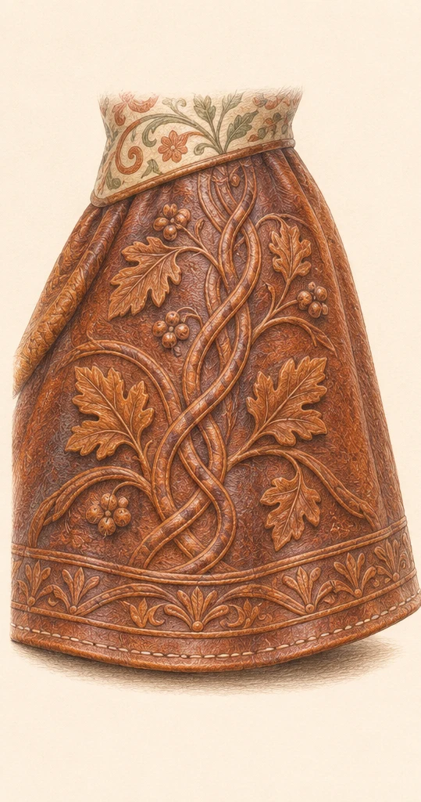
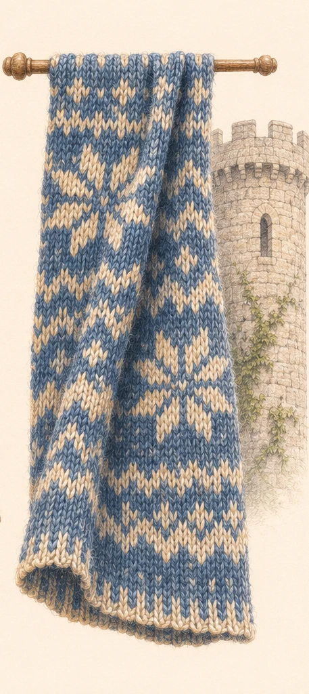
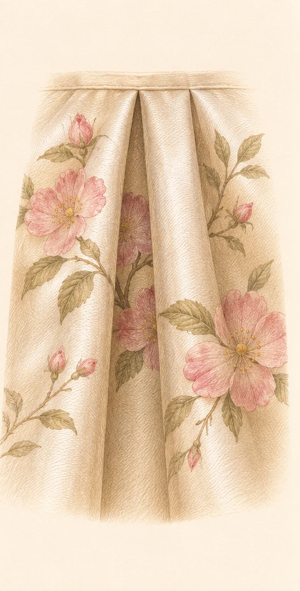
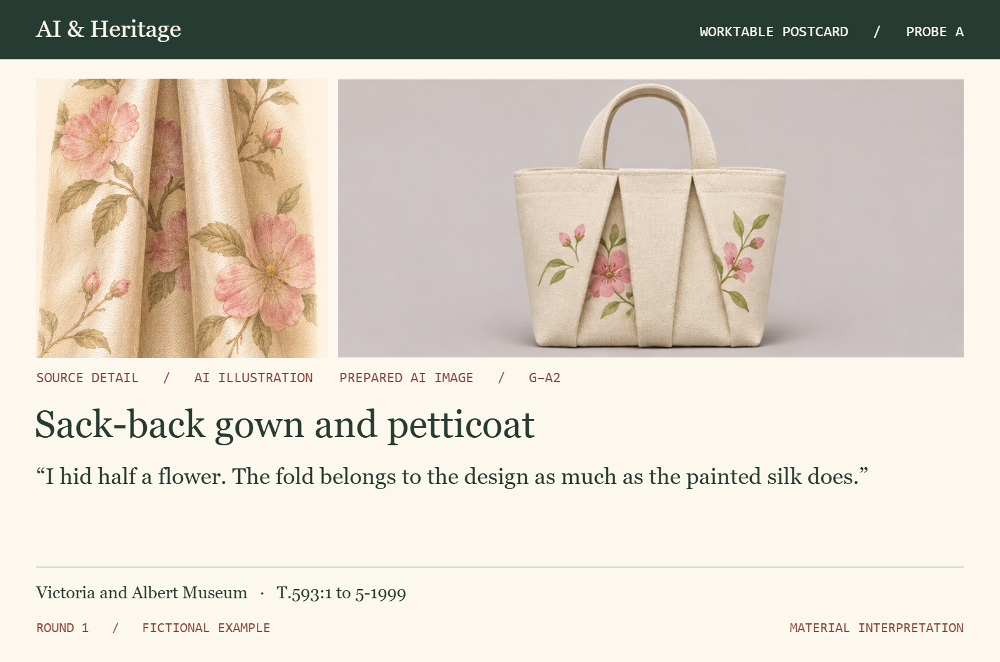
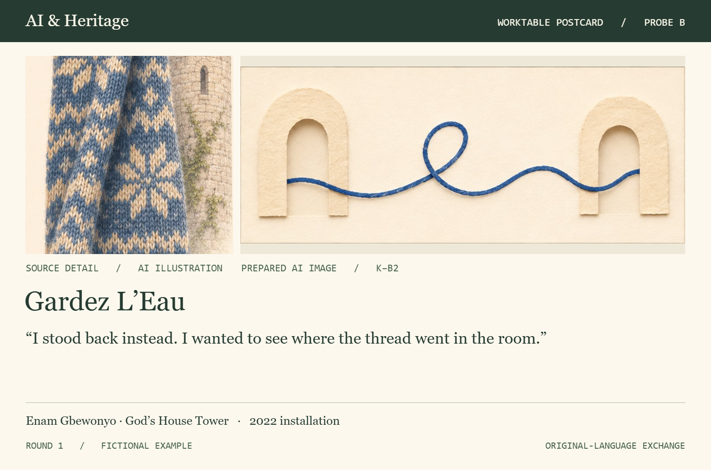

Round 1 / Prototype gallery
Two museum
probes.
What connects a new design to an old object? What changes when another person reads it differently?



Probe A / Authenticity
Make with AI on
my cuff or bag
Pick a detail, arrange fabric or paper and compare two prepared designs. Which part of the original still feels present in what you made?
Probe B / Cross-cultural exchange
One object,
two interpretations
Read an exchange around one object. Follow what a reply changes, then see what happens when one person’s words travel on a postcard.
Take-away materials
Postcards from
the worktable
Two finished examples. Each carries the source, a prepared image and one person’s fictional words. Open either card at print resolution, or make a different version above.




About these materials
The walkthrough follows ERGO 117392, protocol V1.0 dated 11 November 2026. The facilitator selects images prepared in advance. The actual session uses credited object photographs, physical making materials, an original-language board and private paper feedback. People can skip a step, decline an image or discard a draft before submission.
The public-facing source studies are illustrative drawings generated from written descriptions. Each object panel links to its collection or exhibition record. Fictional dialogue and captions demonstrate choices. Read the full design concepts ↗